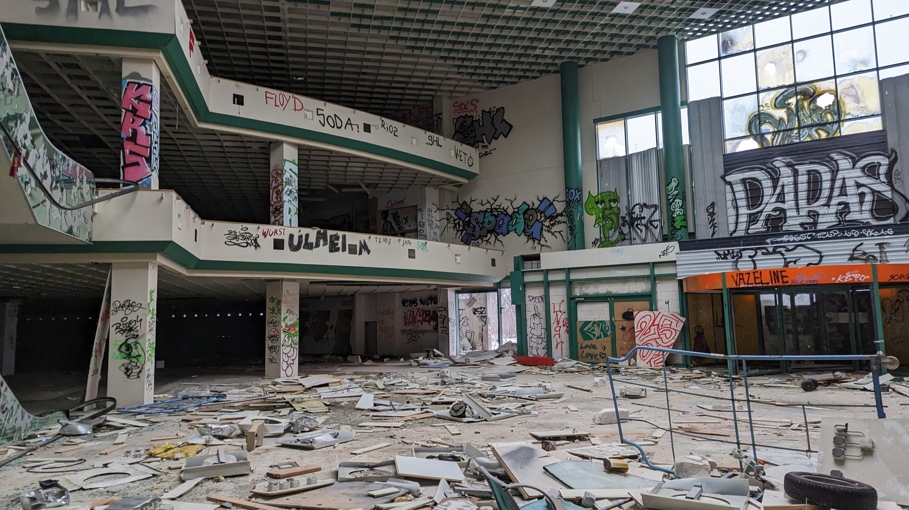
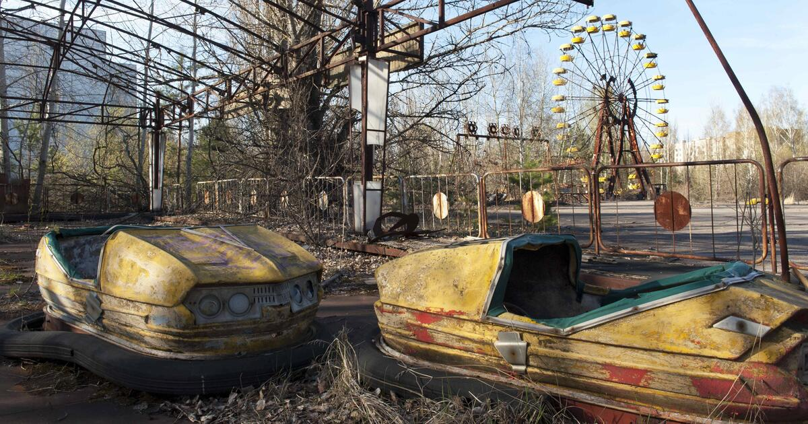
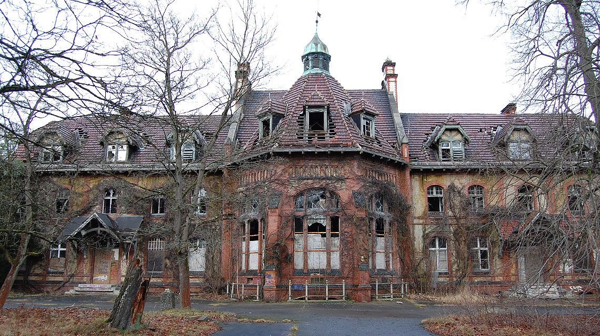

Unsere Top 3 Lost Places
Startseite
|
Archiv
|
ZONE
|
Impressum

Möbelhaus Klipphausen
Ein verlassenes Möbelhaus voller Geschichte und Staub.
Mehr erfahren

Tschernobyl
Die Geisterstadt nach der Reaktorkatastrophe von 1986.
Mehr erfahren

Beelitz-Heilstätten
Verfallene Klinikbauten nahe Berlin voller Geschichte.
Mehr erfahren
Zurück zur Übersicht